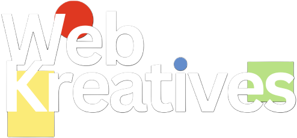
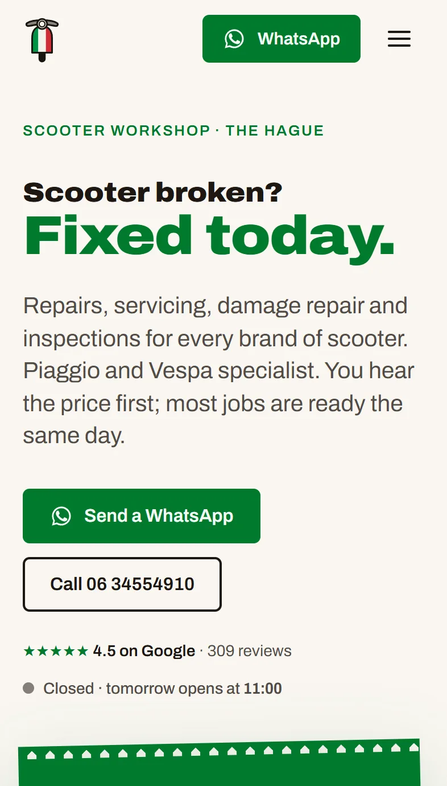
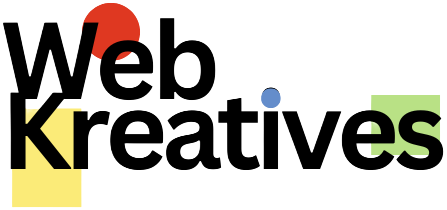
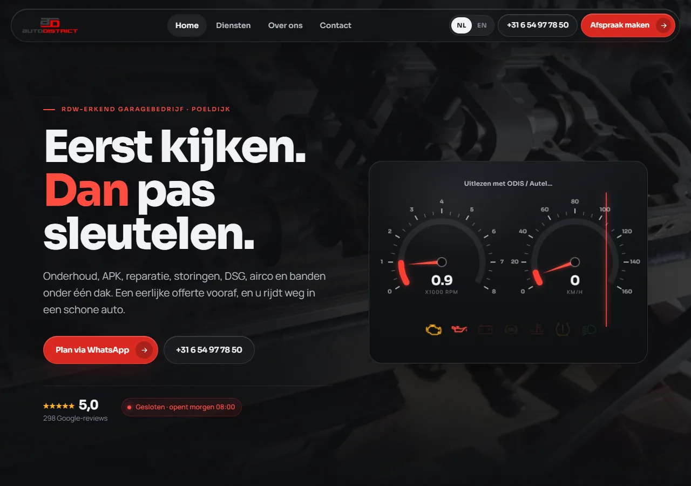

08 · Print
Ink base, dots that scan.
Print surfaces drop the grain, the glow and the grid. 20 px per mm. Red dashes mark the trim and the 3 mm die-cut radius; everything sits 4 mm inside it. QR from python _design/qr.py <url> qr.svg, then node _design/render.cjs sticker out.png --shot qr.svg.
T10 StickerClient window · 50×50 mm + bleed
Websites by
 W
webkreatives.com
W
webkreatives.com
Ink ground like the site. Wordmark top-left, one mark top-right, QR centred at 28 mm: cream dots, red rings in the eyes, cream W on ink in the middle. Plain domain under it; the code carries the tracked path. Lives on the client's window or counter. QR target: webkreatives.com/sticker.
Six artboards. T1 is the default.
Shared frame on all of them: 96px margin, eyebrow top-left, wordmark bottom-left, URL bottom-right, grain and a 64px grid on ink. Portrait 1200×1500 unless stated. Every text below is a
data-slotthe renderer fills.Custom websites for businesses that have outgrown templates.
Fixed price, full ownership, one studio from first sketch through ongoing support.

webkreatives.comInk, eyebrow, three-line headline at 104px with one red phrase, optional lede, one red glow low behind the type. At least every second image.
What a fixed price means.
Two-line headline at 88px, then four to six rows on an ink-2 surface. For "what that means in practice", what is included, how the process runs.
Brought in today, done today.
Scooter workshop. Prices out in the open, WhatsApp and call from the first screen, live opening hours.

Headline top-left, real phone screenshot standing on the right and cut by the bottom edge. Caption names the sector and one checkable detail. Real screenshots only.
A template is the right call more often than we would like.
Until the day it starts costing you the clients it was supposed to bring.

webkreatives.comCream ground, ink type, red-deep accent, light wordmark. No grain, no glow, no mark. Breaks the dark run in the feed; never two in a row.
No handoffs, no finger-pointing.
WebKreatives
One line, six words at most, 124px. Red opening quote as a shape. For quotable closes and reposts.
Privacy page: a section on the LinkedIn tool.
What the company-page tool reads, what it never does with it, and how to have it deleted.

Eyebrow "Shipped", two-line headline at 72px, one-line body, a strip of the changed page along the bottom-right. For "what went live this week".